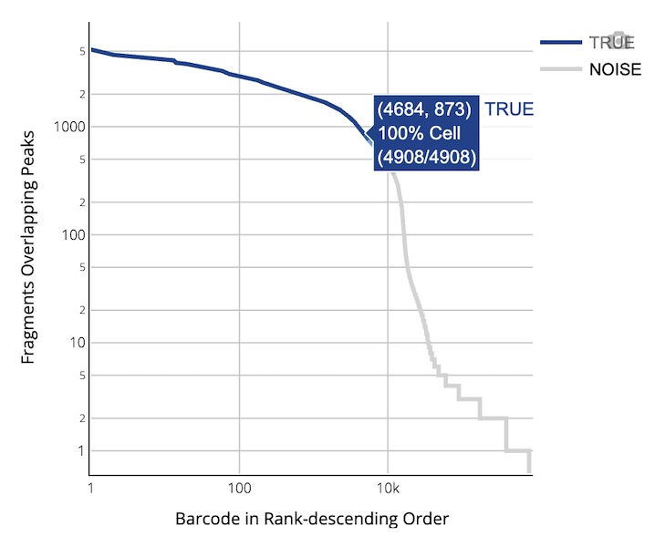

Complete Guide to Single-Cell ATAC Sequencing Analysis Output Files
📁 Directory Structure • 📋 File Details • 🧬 Data Matrix • 📊 Analysis Results • 📊 Report Interpretation
Upon completion of the single-cell ATAC sequencing analysis, the pipeline generates a standardized structure of files and subdirectories in the specified output directory. These outputs are tailored for chromatin accessibility analysis and epigenomic research. This document provides detailed descriptions of the content, format, and purpose of each output file to help users fully understand and efficiently utilize single-cell ATAC analysis results.
Tip: All output files use standard formats compatible with mainstream single-cell epigenomics analysis tools (e.g., Signac, ArchR), ensuring adherence to international data standards.
⚠️ Prerequisites: High-quality single-cell ATAC sequencing data preprocessing is required
.
├── alignment.fragments.sorted.tagged.bam # Quality-controlled alignment results (analysis requires the 'need_bam' parameter)
├── alignment.fragments.sorted.tagged.bam.bai # Index file for the alignment results
├── filter_peak_matrix/ # Directory for the filtered peak matrix in MEX format
│ ├── barcodes.tsv.gz # Barcodes of filtered cells
│ ├── matrix.mtx.gz # Sparse matrix of peak signals in filtered data
│ └── peaks.bed.gz # Peak locations in filtered data
├── fragments.tsv.gz # All fragments aligned to the genome
├── fragments.tsv.gz.tbi # Index for the fragments file for fast random access
├── filtered.fragments.tsv.gz # Quality-controlled ATAC fragments file, containing only high-quality fragments from filtered cells
├── filtered.fragments.tsv.gz.tbi # Tabix index for the filtered fragments file, enabling fast queries of genomic intervals
├── metrics_summary.xls # Summary table of analysis quality metrics
├── raw_peak_matrix/ # Directory for the raw peak matrix in MEX format
│ ├── barcodes.tsv.gz # Raw cell barcode information
│ ├── matrix.mtx.gz # Raw sparse matrix of peak signals
│ └── peaks.bed.gz # Raw peak location information
├── singlecell.csv # Summary table of cell information
└── *_scATAC_report.html # Analysis report in HTML format
🎯 Core Content: ATAC-seq fragment information and peak identification results, containing complete chromatin accessibility data and cell barcode tags
File Description: This is a compressed TSV format file (BED-like format) containing ATAC-seq fragment information, with each line representing a unique ATAC-seq fragment. Fragment intervals are obtained by adjusting alignment intervals: the start position is moved 4bp forward from the leftmost alignment position, and the end position is moved 5bp backward from the rightmost alignment position, representing the center point of transposase cleavage sites.
Core Features:
The file contains 5 columns of information:
| Field Name | Detailed Description |
|---|---|
chrom |
Reference genome chromosome name, identifying the chromosome location of the fragment |
chromStart |
Adjusted start position of fragment on chromosome (0-based coordinate system), corrected by transposase cleavage site |
chromEnd |
Adjusted end position of fragment on chromosome (exclusive), corrected by transposase cleavage site |
barcode |
Cell ID identifier, corresponding to the CB tag in BAM file, used to assign fragments to specific cells |
readSupport |
Total number of read pairs associated with this fragment (including unique and duplicate reads) |
Purpose: Used for visualizing and analyzing chromatin accessible regions, can be processed as a BED file. Compatible with ArchR, Signac and other tools.
Tabix index file for the fragments.tsv.gz file, enabling fast random access to records in any genomic interval and improving data query efficiency.
This is a quality-controlled and cell-filtered ATAC-seq fragment file stored in compressed TSV format (BED-like format).
Tabix index file for the filtered.fragments.tsv.gz file, used for fast random access to quality-controlled fragment files. This index file supports genomic interval queries and improves retrieval efficiency for filtered data.
File Description: This is a quality-controlled alignment result file stored in standard BAM format. The file contains ATAC-seq alignment information that has undergone quality control and filtering, with each read tagged with cell barcodes (CB tag) and molecular identifiers. The file is sorted by genomic coordinates for fast retrieval and analysis.
Cell and molecular barcode information is stored in the following TAG fields:
| Tag | Type | Description |
|---|---|---|
CB |
Z | Cell barcode identifier after error correction and cell merging |
CC |
Z | Error-corrected cell barcode sequence |
CR |
Z | Cell barcode sequence reported by sequencer |
Index file corresponding to the BAM file, used to achieve fast random access to any genomic region in the BAM file. This index file is a standard BAI format index generated using the samtools index command.
🎯 Core Content: Single-cell peak signal count matrix, divided into raw data and quality-controlled filtered data, using standard sparse matrix format
filter_peak_matrix/)Directory Description: Contains three core files of the filtered peak matrix, using Market Matrix Exchange (MEX) standard format.
Core File Composition:
| File Name | Content Description |
|---|---|
barcodes.tsv.gz |
Cell ID list, identifying high-quality cells that passed quality control. Each line contains one cell ID information, corresponding to the column index of the matrix |
peaks.bed.gz |
Peak region position information file, stored in BED format. Contains chromosome, start position and end position, corresponding to the row index of the matrix |
matrix.mtx.gz |
Peak region count matrix, using Market Matrix format. Contains matrix dimension information and non-zero elements' row, column indices and values |
Advantages:
Purpose: Mainly used for downstream bioinformatics analysis.
Reference: For matrix format details, see Market Matrix Format Description.
raw_peak_matrix/)Directory Description: Contains three core files of the raw peak matrix, using Market Matrix Exchange (MEX) standard format.
Core File Composition:
| File Name | Content Description |
|---|---|
barcodes.tsv.gz |
Raw cell ID list, identifying all detected cells (including low-quality cells and empty droplets). Corresponds to the column index of the matrix |
peaks.bed.gz |
Complete peak region position information file, containing all detected peak regions. Contains chromosome, start position and end position information |
matrix.mtx.gz |
Raw peak region count matrix, containing all raw count data |
Advantages:
Purpose: Stores unfiltered peak data for quality control and parameter optimization.
Reference: For matrix format details, see Market Matrix Format Description.
🎯 Core Content: Experimental quality evaluation and statistical metrics summary, providing complete data quality control information
File Description: Summary table of key analysis metrics, using Excel format. Contains statistical information on sequencing data quality, alignment rates, cell counts, peak detection numbers, etc.
Main Metrics Categories:
| Metrics Category | Content |
|---|---|
| 📊 Basic Statistics | Total read pairs, valid barcode proportion, Q30 base quality and other basic sequencing metrics |
| 🧬 Cell Identification | Estimated cell count, peak region fragment proportion, TSS region fragment proportion, peak detection count, TSS enrichment and other cell calling results |
| 🎯 Alignment Metrics | Genome alignment rate, mitochondrial proportion and other alignment statistics |
Quality Control Standards:
Purpose: Used to evaluate data quality and analysis effectiveness.
File Description: Single-cell quality control and statistical information table, using CSV format. Contains quality control metrics such as cell barcodes, fragment counts, peak counts, as well as cell filtering results.
Core Features:
Purpose: Supports downstream personalized analysis and cell quality assessment.
File Description: Complete analysis report, using HTML web format. Contains interactive visualization charts such as quality control indicators, clustering results, peak detection, TSS detection.
| Report Features | Content Description |
|---|---|
| 📊 Interactive Charts | Interactive visualization charts for quality control indicators, cell clustering, peak analysis, etc. |
| 📈 Statistical Summary | Numerical summary and trend analysis of key performance indicators |
| 🔍 Detailed Interpretation | Biological significance and technical explanations of various indicators |
File Format: HTML web format, compatible with all mainstream browsers
Purpose: Provides comprehensive overview and in-depth interpretation of analysis results
Detailed Content: Please see 📊 Web Report Interpretation section
Technical Specifications: Detailed description of standard formats used in output files
.mtx.gz) Format Overview: Market Exchange Format (MEX) is a widely used sparse matrix storage standard in single-cell ATAC analysis, consisting of three core files with excellent compatibility.
matrix.mtx.gz: Compressed sparse matrix file.
barcodes.tsv.gz: Compressed cell barcode file.
CELL1_N2, where CELL1 is the cell ID and N2 consists of two barcodes.peaks.bed.gz: Compressed peak region information file.
| Features | Detailed Description |
|---|---|
| 📊 Space Efficiency | Sparse matrix format stores only non-zero elements, saving significant storage space for single-cell ATAC data (typically over 95% are zero values) |
| 🌐 Transportability | International standard format, facilitating data sharing, publication and cross-platform collaborative analysis |
🎯 Overview: The HTML web report provides comprehensive visualization and detailed interpretation of single-cell ATAC sequencing analysis results, including evaluation of key performance indicators to help users quickly understand experiment quality and analysis results
HTML web report is a comprehensive display platform for single-cell ATAC sequencing analysis, integrating complete results from data quality control to downstream epigenomic analysis. The report uses interactive visualization design to help users quickly evaluate experiment quality, understand analysis results and guide subsequent research directions.
💡 Usage Recommendations: It is recommended to view each indicator in the order presented in the report.
⚠️ Quality Standards: Recommended thresholds and quality levels are provided for each indicator. Please conduct comprehensive evaluation combined with specific experimental objectives.
🎯 Core Function: Cell identification, quality assessment and chromatin accessibility statistics, providing key indicators for overall experimental effectiveness
📊 Quality Control Standards:
| Metric Name | Recommended Value | Acceptable | Needs Optimization |
|---|---|---|---|
| Median fragments per cell | ≥ 10,000 | 2,000–10,000 | < 2,000 |
| TSS enrichment score | ≥ 6 | 4–6 | < 4 |
| Median fraction of fragments overlapping peaks | ≥ 30% | 15–30% | < 15% |
| Median fraction of fragments overlapping TSS | ≥ 20% | 10–20% | < 10% |
| Fraction fragments in cells | ≥ 50% | 20–50% | < 20% |
🔍 Detailed Metric Explanations:
| Metric Name | Detailed Explanation and Technical Requirements |
|---|---|
|
Estimated number of cells Estimated Cell Count |
The number of cells identified as real cells (rather than background noise or empty droplets) in the sequencing data.
|
|
Species Species Information |
Displays the species origin or reference genome information of the sample, derived from information provided during database construction. Ensures analysis uses the correct reference genome version. |
|
Median fragments per cell Median Fragment Count per Cell |
The median number of fragments identified as valid in each cell, reflecting the sequencing coverage of chromatin accessible regions in individual cells.
🔬 Technical Requirements
|
|
Mean raw read pairs per cell Average Raw Read Pairs per Cell |
Total raw sequencing read pairs divided by detected cell count, used to assess raw sequencing depth per cell. It is recommended that each cell has ≥25,000 read pairs to ensure adequate chromatin coverage. |
|
Fraction overlapping peaks Fragment Overlap Peak Region Proportion |
In each cell, the proportion of fragments overlapping with identified peak regions (open chromatin), reflecting signal-to-noise ratio and enrichment effect.
|
|
Fraction overlapping TSS TSS Region Fragment Overlap Proportion |
In each cell, the proportion of fragments falling within TSS±2kb regions, a key indicator for assessing chromatin activity and sequencing specificity.
|
|
Fraction of fragments in cells Cell Fragment Proportion |
The proportion of fragments successfully attributed to real cell IDs among all valid fragments.
> ✅ High-Quality Sample Characteristics: High proportion (>40%) indicates good cell capture efficiency
> ⚠️ Quality Issue Indicator: Low proportion may indicate sample quality issues or library construction anomalies |
|
Number of peaks Identified Peak Count |
Total number of open chromatin regions (peaks) identified through aggregate analysis. Related to cell count, cell type heterogeneity, and sequencing depth. Typical range: 50,000–150,000 peaks. |
🎯 Core Function: Basic quality assessment of sequencing data, including barcode identification rate, alignment quality and sequencing accuracy
📊 Quality Control Standards:
| Metric Category | Recommended Value | Acceptable | Needs Optimization |
|---|---|---|---|
| Valid barcodes | ≥ 80% | 70–80% | < 70% |
| Q30 bases in barcode | > 85% | 75–85% | < 75% |
| Q30 bases in read | > 85% | 75–85% | < 75% |
| Reads mapped to genome | > 80% | 50–80% | < 50% |
🔍 Detailed Metric Explanations:
| Metric Name | Detailed Explanation and Technical Requirements |
|---|---|
|
Total read pairs Total Sequencing Read Pairs |
Total number of sequencing read pairs allocated to the sample, representing the overall data volume of sequencing. It is recommended that each sample obtain at least 100M read pairs to ensure adequate data coverage. |
|
Valid barcodes Valid Barcode Proportion |
The proportion of cell barcodes that can be successfully matched to the preset whitelist (with error correction) among total reads.
> ⚠️ Low Proportion Causes: Library construction issues (such as barcode degradation or contamination) or sequencing errors
|
|
Reads mapped to genome Genome Alignment Rate |
The proportion of all reads that successfully align to any position on the reference genome.
|
|
Mitochondria reads ratio Mitochondrial Reads Proportion |
The proportion of reads that align to the mitochondrial genome. Excessively high proportions may indicate cell death or excessive lysis. Recommended <10%. |
|
Nucleosome-free regions Nucleosome-Free Region Proportion |
The proportion of fragments from open chromatin regions. High proportion indicates good chromatin accessibility signal. Recommended >40%. |
|
Mono-nucleosome regions Mononucleosome Region Proportion |
The proportion of fragments containing single nucleosome regions, reflecting the integrity of chromatin structure. Complements nucleosome-free regions to jointly assess chromatin state. |
|
Q30 bases in barcode Barcode Q30 Base Proportion |
The proportion of bases with quality values ≥30 in the cell barcode region, where Q30 represents a sequencing error rate <0.1%.
|
|
Q30 bases in read Read Q30 Base Proportion |
The proportion of all bases in sequencing reads with quality values ≥30, reflecting overall sequencing quality level. High-quality sequencing is crucial for subsequent fragment identification and peak detection. |
🎯 Core Function: Multi-dimensional visualization display of cell quality control, fragment analysis and chromatin accessibility assessment
Chart Function: Visualizes the fragment count distribution in peak regions for each cell, intuitively displaying cell quality control results and background noise levels. This chart is used to distinguish the distribution differences between identified valid cells and background cells.

Technical Specifications and Coordinate System:
| Axis | Detailed Technical Specifications |
|---|---|
| X-axis Barcode Rank |
Cell Ranking (Descending Order, Logarithmic Scale) All detected cells are ranked by total fragment count in peak regions from high to low. The further left the ranking, the higher the fragment count, representing likely real cells; barcodes ranked to the right have low fragment counts, possibly empty droplets or background noise. |
| Y-axis Fragment Counts |
Total Peak Region Fragments (Logarithmic Scale) The total number of peak region fragments corresponding to each cell. Higher fragment counts indicate more open chromatin regions captured in that droplet, making it more likely to be a real cell. |
| Color Coding Color Scheme |
Cell Density Gradient Display • 🔵 Blue Line: Identified valid cells • ⚫ Gray Line: Background noise cells • 🔷 Blue Gradient Area: Mixed transition region of cells and background noise |
Interactive Features:
Chart Function: Shows the distribution of cell barcode counts captured in real cell droplets. This chart dynamically changes according to adjustments in cell count filtering parameters.
Statistical Distribution Characteristics:
| Distribution Characteristics | Technical Explanation and Quality Control Significance |
|---|---|
| Theoretical Distribution | Bead count distribution in droplets theoretically follows a Poisson distribution, reflecting the statistical characteristics of the random capture process |
| Actual Influencing Factors |
• Sequencing Saturation: When low, beads may not be effectively merged • Droplet Size Variation: Affects bead capture efficiency • Cell Concentration: Affects single-cell capture success rate |
Chart Function: Multi-dimensionally displays the distribution of cell fragment counts, TSS proportions, and peak region fragment proportions, providing a comprehensive cell quality assessment.
Axis Technical Specifications:
| Metric Type | Data Range | Biological Significance and Quality Standards |
|---|---|---|
| Fragment Count Fragments |
1,000 – 50,000 |
Total fragment count for each cell. • ✅ High-Quality: >10,000 • 📊 Acceptable: 2,000–10,000 • ⚠️ Needs Optimization: <2,000 |
| TSS Proportion TSS Proportion |
5% – 90% |
Proportion of fragments in transcription start site regions. Reflects chromatin openness in transcriptionally active regions and sequencing specificity |
| Peak Region Proportion Peak Proportion |
5% – 90% |
Proportion of fragments in peak regions. • ✅ Recommended Value: >30% • 📊 Acceptable: 15–30% • ⚠️ Needs Optimization: <15% |
Chart Function: Shows the distribution of transposase accessibility fragment insertion lengths (deduplicated fragments), providing direct evidence of chromatin structure integrity.
Nucleosome Characteristic Analysis:
| Fragment Length Range | Chromatin Structure | Biological Significance and Quality Assessment |
|---|---|---|
| 50–200 bp | Nucleosome-Free Regions |
Open Chromatin Marker High proportion indicates good chromatin accessibility and transposase activity. The ~10.5 bp sawtooth pattern reflects DNA double helix structure |
| 200–400 bp | Mononucleosome Regions |
Chromatin Structure Integrity Approximately 147 bp core nucleosome + linker region. Peak appearance indicates intact nucleosome structure |
| 400–600 bp | Dinucleosome Regions |
Higher-Order Chromatin Structure Reflects higher-order organization of chromatin. Peak appearance suggests high-quality samples |
| Periodic Pattern | Overall Assessment |
Sample Quality Indicator • ✅ Ideal: Clear ~150 bp periodic pattern • ⚠️ Quality Issue: Lack of periodic features suggests chromatin structure disruption |
Quality Control Standards:

🎯 Core Function: Advanced metrics for sequencing saturation assessment, inter-cell similarity analysis and data quality control
📊 Core Metrics Detailed Explanation:
| Metric Name | Recommended Threshold | Technical Meaning and Biological Significance |
|---|---|---|
|
Percent duplicates Duplicate Sequence Percentage |
≥ 20% 📊 High-Quality: >30% ⚠️ Low Saturation: <10% |
Sequencing Saturation Measurement Indicator Proportion of fragments identified as PCR duplicates. Depends on library complexity and sequencing depth.
|
|
Jaccard threshold Jaccard Similarity Threshold |
🎯 Auto-optimized 🔧 Otsu Algorithm |
Assessment Indicator for Chromatin Accessibility Pattern Similarity Between Cells Used to distinguish whether pairs of beads are located in the same droplet.
|
🎯 Core Function: Advanced visualization display of cell clustering analysis, TSS enrichment patterns, saturation assessment and bead similarity
Chart Function: Displays chromatin accessibility pattern similarity between cells through dimensionality reduction and clustering algorithms, identifying potential cell types and states.
Dual Chart Technical Specifications:
| Chart Type | Data Source | Technical Features and Biological Significance |
|---|---|---|
|
Left Chart Cell Type Clustering Chart |
Chromatin Accessibility Data 🧮 Louvain Algorithm |
Unsupervised Clustering Analysis • 🔬 Algorithm Principle: Graph network partitioning based on Louvain algorithm • 🧬 Biological Significance: Cells with similar chromatin accessibility patterns are grouped into the same cluster • 🎨 Color Coding: Each point represents a cell, different colors correspond to different cell clusters/types • 🗺️ Spatial Mapping: High-dimensional data projected to two-dimensional space through UMAP algorithm |
|
Right Chart Fragment Count Distribution Chart |
Cell Fragment Count 🔥 Quantity Gradient |
Cell Quality Assessment Coverage • 📊 Data Source: Total fragment count detected in each cell • 🗺️ Coordinate System: Uses the same UMAP two-dimensional coordinate system as the left chart, ensuring cell position consistency • 🎨 Color Gradient: Higher fragment count corresponds to deeper color (typically blue to red gradient) • 🔍 Quality Control Significance: Helps identify high-quality cell regions and potential technical noise |
Chart Function: Displays fragment cleavage site distribution within ±1,000 bp upstream and downstream of transcription start sites (TSS) for all barcodes, providing direct evidence for chromatin accessibility and transcriptional activity.
Technical Specifications and Parameters:
| Technical Parameters | Detailed Explanation and Biological Significance |
|---|---|
| X-axis Genomic Position |
TSS upstream and downstream ±1,000 bp interval, statistically analyzed with 50 bp windows, covering most possible promoter and regulatory element regions |
| Y-axis Signal Intensity |
Normalized fragment density signal, normalized by the minimum value in local windows, reflecting transposase cleavage frequency at that position |
Quality Assessment Standards:
Chart Function: Scatter plot displaying two core metrics for each cell, used for cell quality control and cell identification effectiveness evaluation.
Axis Technical Specifications:
| Axis | Data Type | Technical Meaning and Quality Control Significance |
|---|---|---|
| X-axis | Fragment Counts Fragment Count |
Total fragments corresponding to this barcode, reflecting overall chromatin accessibility level in the cell, typically set >1,000 as cell filtering standard |
| Y-axis | TSS Enrichment TSS Enrichment Proportion |
Proportion of fragments falling within TSS±2kb region for this barcode, reflecting cell transcriptional activity |
Data Distribution Interpretation Guide:
Chart Function: Evaluates sequencing depth adequacy and data complexity, guiding sequencing strategy optimization and cost control.
Axis Technical Specifications:
Curve Trend Analysis and Quality Assessment:
| Curve Stage | Feature Description | Biological Significance and Experimental Guidance |
|---|---|---|
| 📈 Initial Stage | Rapid curve rise | Linear Growth Stage, indicating that more deduplicated unique fragments can be obtained as sequencing depth increases, high cost-effectiveness |
| 📊 Saturation Stage | Curve gradually flattens | Diminishing Returns Stage, indicating that most accessibility regions have been adequately detected, continued increase in sequencing depth yields limited benefits |
| 🎯 Quality Standard | Saturation >20% | Recommended Quality Threshold, saturation greater than 20% is recommended; low saturation may indicate sample quality issues or insufficient sequencing depth |
Cost-Benefit Optimization Recommendations:
Technical Background: In C4 ATAC technology, there are cases where one droplet contains multiple beads, requiring similarity calculations to merge bead fragments from the same droplet to obtain accurate single-cell data.
Technical Metrics and Explanation:
| Technical Parameters | Detailed Explanation and Application Significance |
|---|---|
|
Jaccard Index Similarity Indicator |
Similarity indicator measuring fragment overlap degree between two cell barcodes (bead barcodes) • 📏 Calculation Formula: `Jaccard = (A∩B) / (A∪B)` • 📊 Numerical Meaning: Higher values indicate greater similarity between two barcodes, possibly from different beads in the same droplet • 🎯 Threshold Setting: Automatically determine optimal similarity threshold through Otsu algorithm |
| X-axis Ranking Position |
All barcode pairs, ranked from high to low by Jaccard similarity value, used to identify similarity distribution patterns |
| Y-axis Similarity Value |
Jaccard Index value (logarithmic coordinate display), logarithmic coordinates help better display details in low similarity regions |
Color Differentiation and Merging Strategy:
Application Significance: This chart is used to visualize the effectiveness of barcode merging strategies, helping determine optimal Jaccard similarity threshold through "inflection point" characteristics to achieve accurate data merging.
| Document Type | Resource Links and Description |
|---|---|
| 🚀 Quick Start | Quick Start Guide - Complete tutorial for first-time analysis |
| ⚙️ Parameter Reference | Parameter Reference Manual - Detailed explanation of all configurable parameters |
| 🔬 Analysis Pipeline | Analysis Pipeline Description - Technical details of the entire analysis pipeline |
| 🔧 Installation Configuration | Installation Configuration Guide - System requirements, installation steps and environment configuration |
For more detailed information, please refer to the document links above or contact the technical support team.